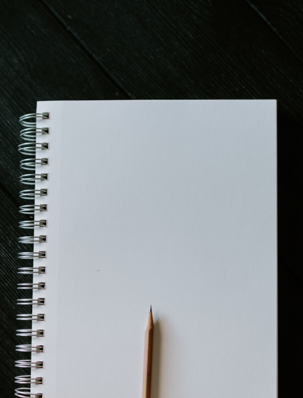

Portfolio
Dimensional Analyzer
When you work in the real world as a student, engineer, scientist,
or in countless other jobs and professions you need a tool that
not only solves math problems but a tool that works with real
things. You need a calculator on steroids. Imagine needing to
calculate the size of a cistern need to cache rainwater from a
roof of a house you are building. You need to capture 10,000
gallons a year. It rains 23 inches a year in your location. How
large should your roof be in square feet? You are imagining the
calculation right now - convert the gallons to cubic feet and the
inches to feet and then do some math and … How about entering
10000 gal / 23 in and tapping the
answer key and 697 sq ft pops up on
the display? Rounding is based on NIST guidelines. Tap the number
and it toggles to SI units. Tap another key and you can see
step-by-step dimensional analysis. The patent-pending technology
driving this tool allows you to spot errors in complex
calculations using any real world unit. You can create complex
custom formula templates and recall them for later use with a
single tap. Everything is designed to be efficient – all major
functionality is no more than two taps away, no scrolling, no
swiping. The interface is designed to be fast, efficient, and
intuitive. This app was built with React Native and runs on
Android phones, iPhones, and browsers.

Income and Expense Tracker
Designed to easily capture, display, and report on income and
expenses for individuals and small businesses. It allows receipt
capture using the camera on your phone and runs on any device
including phones, tablets, laptops, and desktop computers. Data is
stored in the cloud and is accessible from any internet-connected
device that supports a modern browser. It was built using React
and designed as a Progressive Web App.
Quilt Tracker
This app is designed to allow quilters to track their projects,
inventories, tools, expenses, sales, and donations. The app can
capture and store images of quilts and even automatically analyze
and record the individual colors making up the quilts. It was
built using React and designed as a Progressive Web App.
Brain Dumpling
An educational quiz app that is fun to use and encourages
engagement with books covering science, history, literature, and
biography. It tracks scores and allows competition among friends.
A planned teacher's edition of the program will specifically
support classroom use on any subject. It was built using React and
designed as a Progressive Web App.

Wow!

Let's build something awesome together.